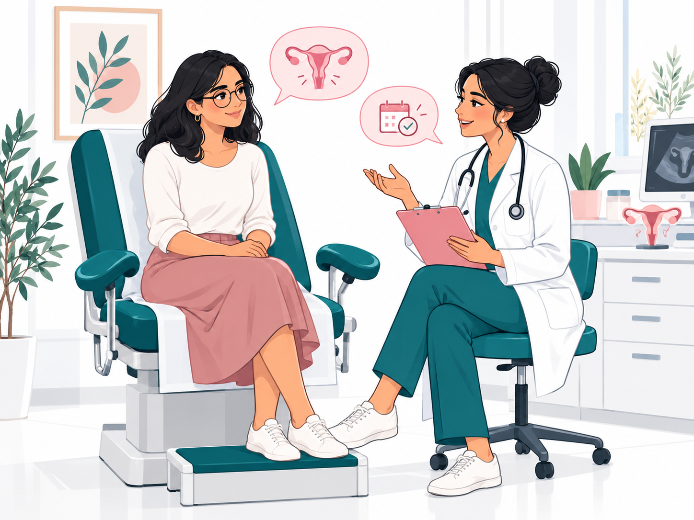

Training and expertise
Dr Hager Gabsi Boujelbane graduated from the Faculty of Medicine of Tunis and practices obstetrics and gynecology. Consultations are tailored to each patient’s situation.
Obstetrics and gynecology specialist
♧ Faculty of Medicine of Tunis

Thoughtful women’s health care in L’Aouina, Tunis.
Dr Hager Gabsi Boujelbane graduated from the Faculty of Medicine of Tunis and practices obstetrics and gynecology. Consultations are tailored to each patient’s situation.
Listening, clear explanations and respect for confidentiality guide each consultation.
Care suited to different stages of women’s health.
Appointments at Olivia Medical Centre in L’Aouina.
Olivia Medical Centre, 1st floor, C1-8, Cheikh Mohamed Neifer Street, Cité les Palmiers (near Monoprix Zayatine), L’Aouina, Tunis 2036
View on Google Maps ↗Monday to Friday : 9 h–17 h
Saturday : 9 h 30–13 h
Sunday : Closed
Highlights professional, attentive and gentle care
— Amal Dabech
Appreciates the attentive and reassuring approach
— sarah 669
Values clear explanations throughout the visit
— Cyrine Mss
Summaries of public reviews. The rating and review count may change.
Women’s health information adapted from the practice’s posts in L’Aouina, Tunis.
Explore the articles →